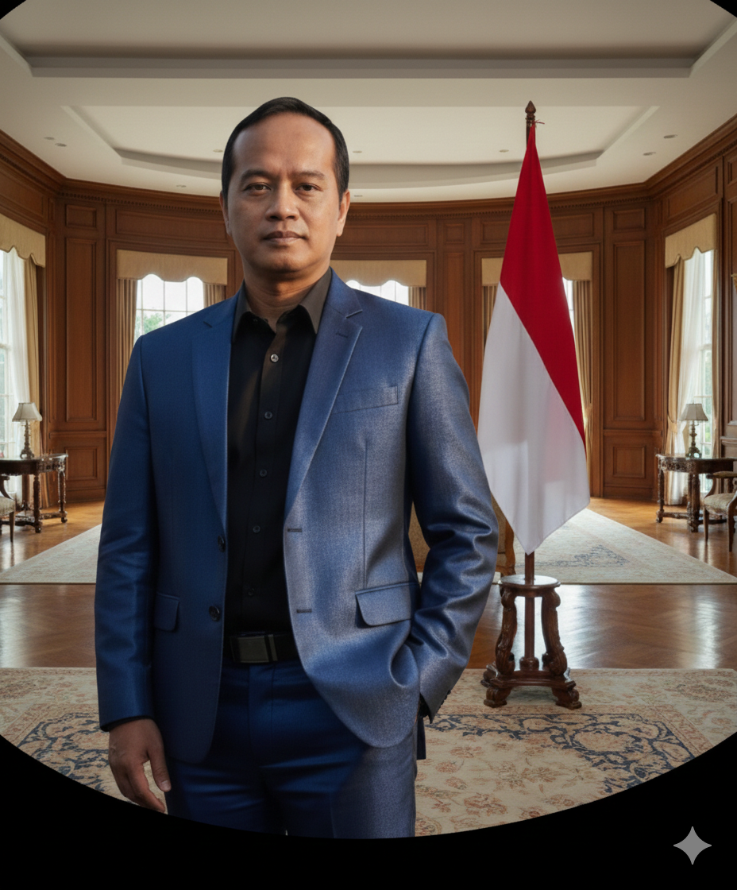

Judul Berita
Tanggal • Penulis
Komitmen transparan, mudah diakses, dan efisien. Bersama PERADI Kharisma, wujudkan penegakan hukum yang bermartabat.
"Menjadi organisasi advokat terdepan yang profesional, berintegritas, dan berdedikasi dalam mewujudkan supremasi hukum serta keadilan bagi seluruh masyarakat Indonesia."

"Menjaga marwah profesi sebagai penegak hukum yang bebas, mandiri, dan bertanggung jawab."

"Jantung operasional organisasi, mendukung visi Ketua Umum untuk Officium Nobile modern."
 Resmi
Resmi
Pengesahan PERADI Kharisma sebagai Organisasi Advokat yang sah.
Etika
Pedoman perilaku dan standar profesional bagi seluruh anggota.
 Regulasi
Regulasi
Tata cara pengangkatan dan pemberhentian anggota Dewan Kehormatan.
Resmi
Pengesahan susunan Dewan Pimpinan Nasional masa bakti 2024-2028.
Akademik
Tata cara, syarat, dan materi ujian profesi advokat.
 Kegiatan
Kegiatan
Upacara pengambilan sumpah janji advokat yang sakral dan berkesan. Menandai dimulainya perjalanan profesional para advokat baru dengan tanggung jawab menjaga kode etik dan marwah profesi.
 Seminar
Seminar
Program pelatihan intensif untuk mengembangkan skill paralegal profesional. Kurikulum komprehensif mencakup praktik hukum, research, dan manajemen kantor advokat dengan instruktur berpengalaman.
 Rapat
Rapat
Program pendidikan formal untuk calon advokat yang komprehensif dan terintegrasi. Mencakup teori hukum, praktik, etika profesi, dan pelatihan case handling dari advanced practitioners.